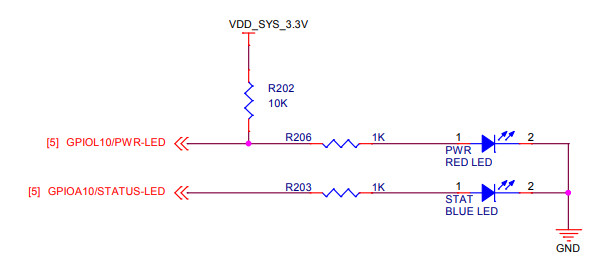
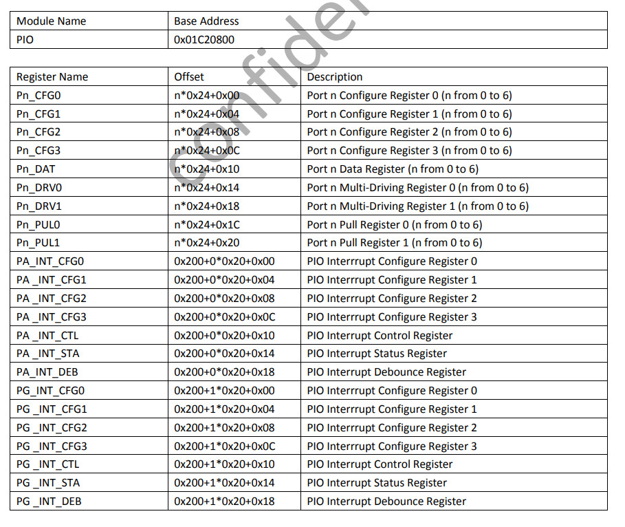
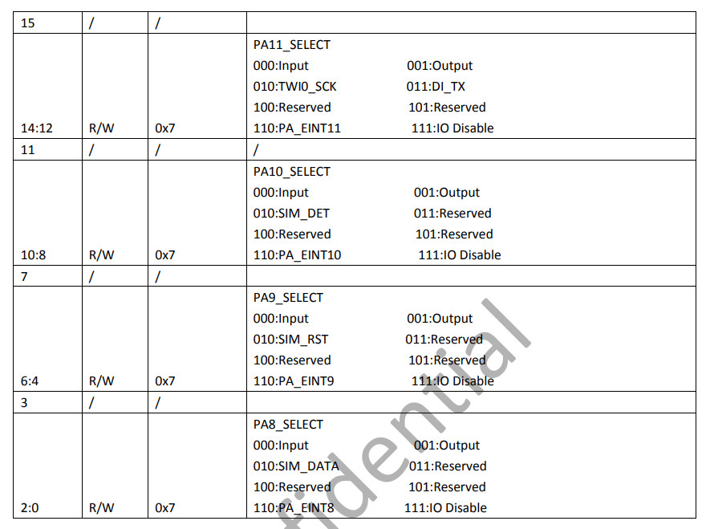
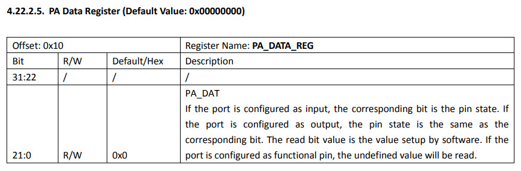
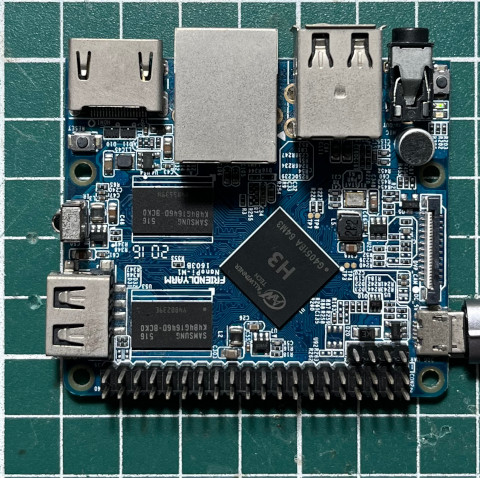
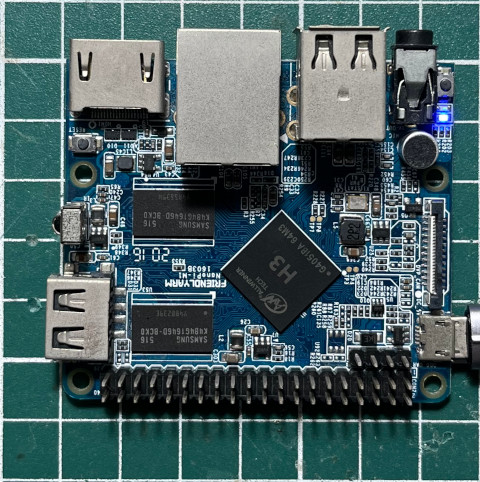

藍色LED是連接到PA10




.global _start
.equ GPIO_BASE, 0x01c20800
.equ PA_CFG1, (GPIO_BASE + 0x04)
.equ PA_DATA, (GPIO_BASE + 0x10)
.arm
.text
_start:
.long 0xea000016
.byte 'e', 'G', 'O', 'N', '.', 'B', 'T', '0'
.long 0, __spl_size
.byte 'S', 'P', 'L', 2
.long 0, 0
.long 0, 0, 0, 0, 0, 0, 0, 0
.long 0, 0, 0, 0, 0, 0, 0, 0
_vector:
b reset
b .
b .
b .
b .
b .
b .
b .
reset:
ldr r0, =PA_CFG1
ldr r1, =0x00000100
str r1, [r0]
ldr r0, =PA_DATA
ldr r1, =(1 << 10)
0:
eor r2, r1
str r2, [r0]
ldr r3, =10000000
1:
subs r3, #1
bne 1b
b 0b
.end
main.ld
MEMORY {
RAM : ORIGIN = 0, LENGTH = 64K
}
SECTIONS {
.text :
{
PROVIDE(__spl_start = .);
*(.text*)
PROVIDE(__spl_end = .);
} > RAM
PROVIDE(__spl_size = __spl_end - __spl_start);
.data : { *(.data*) } > RAM
.bss : { *(.bss*) } > RAM
}
Makefile
all: arm-linux-gnueabihf-as -mcpu=cortex-a7 -o main.o main.s arm-linux-gnueabihf-ld -T main.ld -o main.elf main.o arm-linux-gnueabihf-objcopy -O binary main.elf main.bin gcc mksunxi.c -o mksunxi ./mksunxi main.bin run: sunxi-fel -p write 0 main.bin && sunxi-fel exec 0 clean: rm -rf main.bin main.o main.elf
編譯、下載
$ make
arm-linux-gnueabihf-as -mcpu=cortex-a7 -o main.o main.s
arm-linux-gnueabihf-ld -T main.ld -o main.elf main.o
arm-linux-gnueabihf-objcopy -O binary main.elf main.bin
gcc mksunxi.c -o mksunxi
./mksunxi main.bin
The bootloader head has been fixed, spl size is 512 bytes.
$ make run
sunxi-fel -p write 0 main.bin && sunxi-fel exec 0
100% [================================================] 1 kB, 135.2 kB/s
完成

